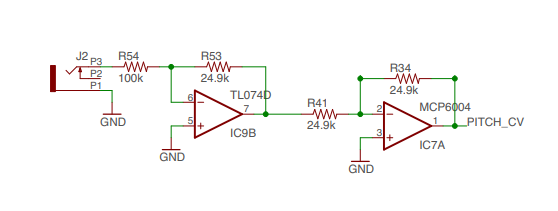

CV Input to Microcontroller
Many digital modules will need at least one CV input, however you have likely noticed that while Eurorack can have ±10V travelling through its patch cables, most microcontrollers will be very unhappy to receive anything outside of the range 0-3.3V. To allow you to ‘read’ the whole 10V CV range, you need to perform something called ‘signal conditioning’. This means that you want to ‘condition’ the potential range of ±10V into 0-3.3V, cutting out any parts you don’t need to read, and scaling the parts that you do to the readable range.
One excellent circuit for doing just this, has been designed by Émilie Gillet of Mutable Instruments.

This circuit has two op-amps, which both perform very important functions. The first op-amp (a TL07X) is set up as an inverting amplifier, so it is able to have a gain of less than 1 (Non-inverting amplifiers can only have a gain of greater than or equal to 1). Its gain is -0.249, which will turn +10V into -2.49V, and -10V into +2.49V. We still have a problem that the voltage enters negative potential, and that the voltages have been flipped.
Now op-amps always clip the incoming signal depending on the power supply they are given, but ‘rail-to-rail’ op-amps clip very precisely, incredibly close to the power rails they are provided with. Thus, by providing the second op-amp with a power supply of Ground and +3.3V, the outgoing signal has always been clipped to an absolute minimum and maximum of 0-3.3V, so cannot harm the microcontroller’s input. The op-amp used for this is an MCP600X, as it is rail-to-rail.